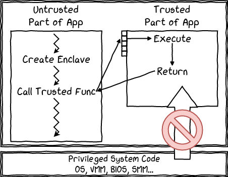
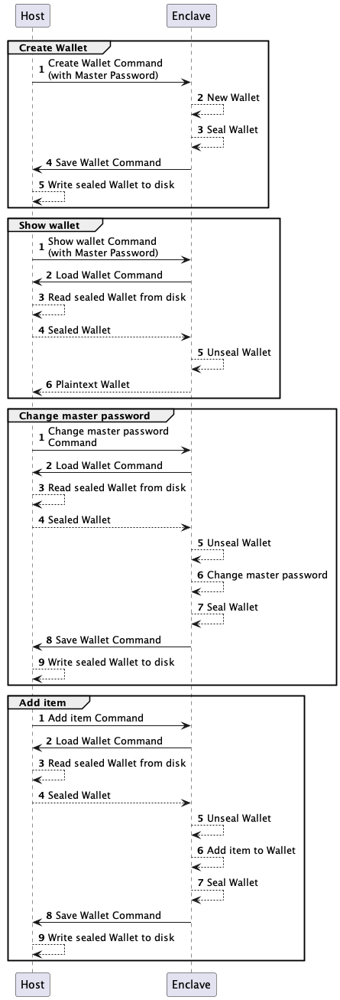

Intel SGX demystified — Part 3: The enclave program
Demystifying SGX — Part 3 —The enclave program

When I first ventured into the realm of SGX, the trusted execution environment that ships with almost all Intel server chips, my understanding was muddled with misconceptions. I held inaccurate mental models of its functioning, and, more significantly, I anticipated a different programming approach. All this made the learning process more difficult than necessary.
In this article, you’ll find the straightforward overview I wish I had at my fingertips when I began. It’s aimed at sparing you the initial confusion and paving a smoother path into the world of SGX.
This is part 3 of the “Demystifying SGX” series. I highly recommend starting with part 1 and part 2 for a high-level understanding of the hardware foundations.
The architecture
Consider the scenario: you have the hardware capability to run code in complete isolation. What should the architecture of an application using this feature look like?
The root of the main misconception is the mental model people are forming after reading the usual phrases: “running an application in SGX” or “writing an SGX application”. They imagine a standalone program operating in a typical client-server model, where its API consists of a suite of functions accepting arguments and returning results.
This model is perfectly fine when thinking about the application at the conceptual level. As a matter of fact, this is the model that modern high-level SGX SDKs expose. At this level of abstraction, the concerns are mostly around not revealing any secret information and ensuring the enclave code can protect itself against being fed invalid payloads or various replay attacks.
But this differs from how an SGX enclave is implemented in the reference Intel SDK. The mismatch between the useful high-level model and the code samples and explanations found in the most popular tutorials causes developers a lot of confusion.
The rest of the article will bridge the gap between the two models and prepare you to understand the more low-level SGX tutorials and, in a later blog post, the SGX attacks.
The adversary
To quote Martin Scorsese: “We have the protagonist, but where is the antagonist? Where is the drama?”
The villain in the SGX story is the “untrusted code”, which includes the Operating System. Their main goal is to extract secrets or to forge computations.
The untrusted code villain has a wide range of weapons in its arsenal, from controlling the actual OS to calling the various functions with malicious arguments, pausing and inspecting the memory and the registries, and many more.
The Intel SGX SDK
It is crucial to note that Intel designed the SGX enclave not as an independent process but as a library loaded and executed within an untrusted“host” process. The communication between the host and the enclave is bi-directional, allowing them to interchangeably assume the roles of client and server in relation to each other.
Security, restrictions and boundaries
This design choice becomes intuitive when one appreciates the unique restrictions of an enclave program. Take, for example, the prohibition of “System calls” or syscalls.
As a reminder, syscalls serve as the means through which an operating system provides various services to programs, facilitating operations like file reading and writing or data transmission over a network.
Syscalls themselves are programs that come bundled with the OS kernel. When a process initiates a file read operation, for instance, the corresponding syscall verifies whether the calling program possesses the necessary “read” access rights before retrieving the file’s content from the file system.
Conceptually, any program that relies upon syscalls will, at some point, give control to the OS to perform certain tasks. This is fine in the traditional model, where the OS is considered trusted, but not for an enclave where it is an adversary.
We can speculate on the reasons why the engineers at Intel decided to restrict syscalls.
If the syscalls were executed as part of the enclave, the CPU would need to “measure” the syscall program and include it in the enclave measurement and Attestation quote, which would tether the enclave to a specific OS version.
Note that the measurement would prevent an attacker from running the enclave on a computer initialised with malicious kernel code.
The remaining option is executing syscalls outside the enclave. This comes with different challenges when considering that the CPU already performs complex security logic during syscalls. It is possible that the interactions between the security models were just too complex. Another factor is the burden that this model puts on the enclave developer. When writing programs in a high-level language, one rarely considers which calls actually make a syscall behind the scenes. When writing enclave code, it could be an easy mistake to overlook something and leak secret data to the OS by saving something in a temporary file, for example.
For these reasons, Intel engineers decided to restrict syscalls but addressed this limitation by enabling the enclave to solicit custom services from the host process. The developer is responsible for explicitly defining these services, which become part of the enclave “untrusted” API.
Essentially, Intel designed the “host” to function as an operating system for the enclave. Mirroring the interaction a typical program has with the OS via syscalls, the enclave program can also call on services exposed by the host.
The Password Manager example
Let’s look at the flow of a typical example: building a secure password manager.
These are the requirements from the sgx101 website:
The purpose of this application is to create a password wallet that can safely store your passwords and display them when requested. By implementing the wallet with SGX enclave protection, you are guaranteed to be able to securely create a wallet and manage the items inside it. The wallet will be sealed using SGX so that data are protected on disk and unsealed before any operation onto the wallet. Sealed wallet will be saved as filename “wallet.seal”.
In this case, the attacker is not the local computer but a hacker who gains access to it later.
You may be curious about the necessity of SGX, considering that, naively, the wallet file could be encrypted directly with the master password. However, it is crucial to understand that without SGX, an attacker who obtains the password-encrypted “wallet.seal” file could potentially employ brute-force techniques to crack it, particularly if the password lacks sufficient entropy.
An SGX-based password manager can incorporate built-in delay logic to protect against brute-forcing the master password. It also leverages the cryptographic sealing key tied to the processor. This means that attempting to brute-force the sealed wallet file would require brute-forcing the enclave itself in release mode, which is highly impractical.
The diagram below depicts the “business logic” and the responsibilities of the “untrusted” host and the “trusted secure” enclave.
As you can see in the diagram, the enclave takes commands from the host (represented with a continuous arrow), like changing the master password, but also sends commands to the host, like storing the wallet on disk.

All the logic performed over the secret data, like adding an item, is the responsibility of the enclave, while the host performs all the typical OS-specific functions.
Now that we understand the requirements of the password manager, we’ll build the program using a model more familiar to high-level programmers but which is equivalent to the low-level usage envisioned by Intel.
The Enclave as an Object
If your background is in OOP languages, the best way to look at an enclave is to consider it an Object.
The enclave object has a method for each command it takes from the host and a field for each callback function that calls into the host.
Below is the conceptual API of the “Password Manager” object when expressed as an object in Go.
First, we define the signatures of the callback functions.
type LoadWalletCbType = func() []byte // Returns the sealed wallet
type SaveWalletCbType = func(sealedWallet []byte) // Saves the sealed wallet
Next, let’s define the “PasswordManager” object.
type PasswordManager struct{
sealingKey []byte
LoadWalletCommand LoadWalletCbType
SaveWalletCommand SaveWalletCbType
}
func (pm *PasswordManager) CreateWallet(masterPwd string){
//... new wallet logic
pm.SaveWalletCommand(sealedWallet)
// ...
}
func (pm *PasswordManager) ShowWallet(masterPwd string) []byte{
sealedWallet := pm.LoadWalletCommand()
// ... unsealing logic
return plaintextWallet
}
func (pm *PasswordManager) ChangeMasterPassword(oldPwd string, newPwd string){
oldSealedWallet := pm.LoadWalletCommand()
// ... unsealing and changing password
pm.SaveWalletCommand(newSealedWallet)
// ...
}
func (pm *PasswordManager) AddItem(masterPwd string, item []byte){
oldSealedWallet := pm.LoadWalletCommand()
// ... unsealing and adding the item
pm.SaveWalletCommand(newSealedWallet)
// ...
}Notice how the callback functions pass the control back and forth between the object and the caller.
Also, notice how the overall API of this “PasswordManager” service consists of the signatures of the methods plus the signatures of the callbacks. In SGX tutorials, these are called the “trusted” and “untrusted” boundaries.
Execution of the enclave
The final question to answer to complete the picture is how the instructions in this SGX enclave object actually run on the CPU.
The OOP analogy comes in handy here as well. The best way to think about an SGX enclave is as an encapsulated object with an API and an encrypted internal state that lives inside the “host” process.
To put it differently, the “host” is a typical application with a “main” method that runs as a standalone process. Similar to how it might initialise an embedded SQLite database if it needs to store some structured data, it can also initialise the “PasswordManager” object. Both SQLite and the PasswordManager enclave live inside the space of the main process, and their lifecycles are fully controlled by it.
In practice, the difference is that the embedded SQLite is one of the services a typical program needs to operate, but the “Password manager” enclave is most likely the main reason for the existence of the host program.
In the rest of this section, we’ll look at what happens under the hood during the host-enclave interactions.
Initialisation of the enclave
First, the host program has to create the enclave. This step is similar to instantiating an object when the program allocates some memory space and calls the constructor with the supplied arguments. However, for an enclave, there are a few additional steps.
The entire enclave program must be loaded in memory and “measured”. Based on the measurement, the CPU will create the volatile encryption keys necessary to allocate the encrypted memory space, which is part of the normal memory space of the host process, except that all access to it passes through a dedicated hardware encryption engine.
ECALLs
Upon successful initialisation, the host has a handle for the enclave, allowing it to invoke specific entry points, like the “CreateWallet” function in our example. Using the official Intel SDK for SGX, this is accomplished using the ECALL (enclave call) function.
Maybe surprisingly, nothing extraordinary happens on ECALLs. It is similar to calling a regular function because the same CPU core will continue executing the same process.
Note: When a normal program calls a function, the Instruction Pointer (IP) will no longer move to the next instruction in the program but will jump to the address where the function starts.
Behind the scenes, an ECALL changes the operation mode of the CPU core to “enclave mode”, which enables access to the encrypted memory and loads the IP register with the address of the enclave entry point. After that, the CPU will carry on executing instructions at that address, with the main difference being that memory access is routed through the Memory Encryption Engine. There are other restrictions, of course. For example, as mentioned before, the core cannot execute system calls and the available instruction set is also reduced. Essentially, the CPU is now executing the enclave.
More concretely, when the host program calls ECALL(enclaveHandle, "CreateWallet", "strongPassword"), the address of the “strongPassword” value will be loaded in one of the registers, the IP will be loaded with the address of the “CreateWallet” function, and then the enclave mode will be activated. Then the same CPU core will execute the first instruction of “CreateWallet”, but this time it will have transparent access to the contents of the encrypted memory.
OCALLs
We’ve seen that communication is bidirectional, so at some point, the enclave will call one of the callbacks, or “exit points”, like “SaveWalletCommand”.
This is done using OCALL (out-call), which is also a normal function call performed after the enclave mode is turned off. For security purposes, the OCALL has to clear the registers and the CPU cache because the exit point callback code is “untrusted", meaning it could try to access the registers directly or the cache through microarchitectural attacks, thus leaking secrets.
When the callback finishes, the enclave mode is turned back on, and the next instructions from the enclave are executed.
The back and forth between the “trusted” and the “untrusted” code is relatively lightweight as the CPU will run the same process but in a different mode.
Threads
Another interesting element is multi-threading because, intuitively, the assumption is that you should be able to start a new thread from the enclave code.
The model chosen by Intel is simpler. Since system calls are disabled from the enclave, so is the possibility of forking. Thus, multi-threading becomes the responsibility of the host, which can start multiple threads executing different enclave entry points.
One difference from typical execution is that each thread will be executed and bound to a different core.
Since these threads execute on the same enclave handle and share the encrypted memory space, Intel provides special instructions to synchronise between them.
Conclusion
Modern SGX SDKs hide a lot of complexity away from developers. For example, you can just write a normal application in languages such as Golang, Rust, or Java, and magically, the code will be executed inside an enclave.
Behind the scenes, these SDKs employ clever techniques to define the trusted and untrusted boundaries and conduct all the low-level interactions, leaving developers with a much simplified, user-friendly experience.
While comprehending the intricate backstage operations is no longer essential, having this knowledge can offer considerable advantages when it comes to troubleshooting and auditing security.
My hope is that this article provides a useful launching pad, propelling you forward in your exploration of SGX. Armed with this foundational understanding, you’re well-equipped to delve deeper into this intriguing realm of confidential computing.
The “Demystifying SGX” Series
In part 1, we look at the hardware features behind SGX.
In part 2, we look at the features that make CPUs fast, and how they can be exploited.
In part 3, we look at the architecture of an SGX enclave, then explore how the program is executed and even build a simple program.
In part 4, we look at real-life applications of secure hardware.